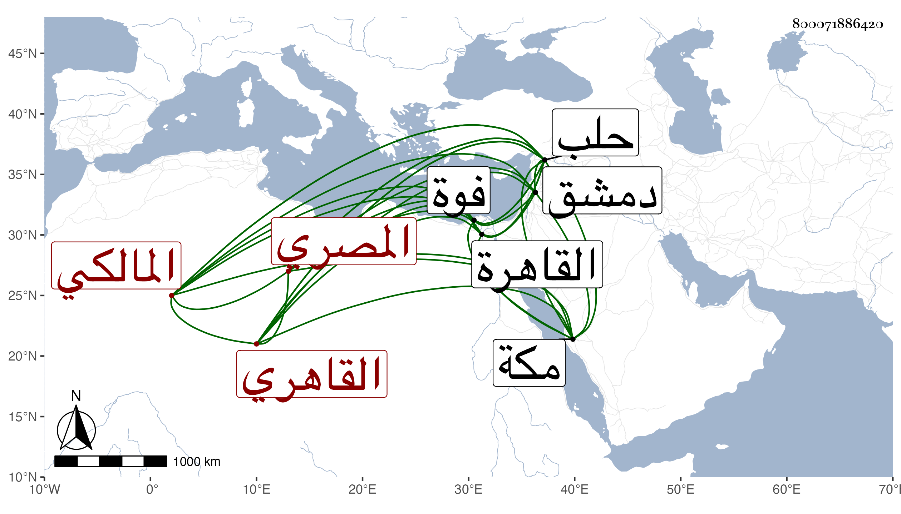

0902Sakhawi.DawLamic.ITO20230111-ara1.EIS1600.800071886420
Biography ID: 800071886420
236
أحمد بن محمد بن أحمد بن علي الشهاب بن التقي بن الدميري ثم المصري القاهري المالكي ابن أخت التاج إبراهيم ووالد عبد القادر وعبد الغني الآتيين ويعرف بابن تقي وابن أخت بهرام . ولد بفوة في سنة خمس وثمانين أو قبلها أو بعدها وانتقل إلى القاهرة في صغره مع والده فحفظ بها القرآن والموطأ والعمدة وابن الحاجب الفرعي والأصلي وألفية النحو والتلخيص وغيرها ومن فقهائه الشهاب أحمد القرافي والد الشمس الشهير وعرض على جماعة منهم التقي الزبيري وناصر الدين الصالحي والطبقة وتفقه بخاله وبالشمس بن مكين وعبد الحميد الطرابلسي المغربي في آخرين ، وأخذ العربية عن الغماري والأصلين عن البساطي وأصول الدين أيضا بحلب عن سعد الدين الهمداني قرأ عليه شرح الطوالع للبهنسي قراءة بحيث والعروض لابن الحاجب عن محمود الأنطاكي وسمع على الحلاوي والتنوخي وابن أبي المجد والعراقي والنجم البالسي والتقي الدجوي وطائفة وبعض ذلك بقراءته ولكنه لم يكثر ، واشتهر بقوة الحافظة بحيث كان فيها من نوادر الدهر يحفظ الورقة بتمامها من مختصر ابن الحاجب من مرتين أو ثلاث تأملا بدون درس على جاري عادة الأذكياء غالبا بل بلغني أنه حفظ سورة النساء في يويمن والعمدة في ستة أيام والألفية في أسبوع وأن السراج عمر الأسواني أنشد قصيدة مطولة من إنشائه وكررها مرة أو مرتين فأحب إخجاله فقال له أنها قديمة فأنكر السراج ذلك فبادر الشهاب وسردها حفظا وكانت نادرة واتفق كما بلغني أن بعض شيوخه سأله في ليلة عيد هل يحفظ له خطبة رجاء استنابته فيها فقال لا لكن إن كان عندك نسخة بخطبة فأرنيها حتى أمر عليها فأخرج له خطبة في كراسة بأحاديثها ومواعظها على جاري عادة خطب العيد فتأملها في دون ساعة ثم خطب بها . ولم يزل مجدا في العلوم حتى برع وتقدم باستحضار الفقه وأصوله والعربية والمعاني والبيان والمشاركة في جميعها مع الفصاحة ومعرفة الشروط والأحكام وجودة الخط وقوة الفهم والنظم الوسط والاستحضار لشرحي مسلم للقاضي والنووي ومع هذا كله فكان غير متأنق في هيئته مع ثروته ، ودرس وأفتى وطار صيته وصار إليه مرجع المالكية خصوصا بعد البساطي بل عين في حياته للقضاء فلم يتفق لكنه استخلفه بمرسوم من السلطان حين جاور بمكة وحج هو مرتين مفردا وكان دخوله حلب ودمشق متضمنا لأمير المؤمنين المستعين بالله حين سار الناصر ومعه القضاة والخليفة على العادة بعد سنة عشر لقتال شيخ ، وأول ما ناب عن ابن خلدون في سنة أربع وثمانمائة واستمر ينوب عمن بعده ، ولي تدريس الشيخونية برغبة البساطي عقب موت الجمال الأقفهسي وكذا بالحجازية بالقرب من رحبة العيد برغبة قريبه الولوي بن التاج بهرام المتلقي له عن أبيه وبجامع الحاكم والفاضلية والقراسنقرية برغبة أصيل الخضري له عنها وبالقمحية وغيرها وأعاد بالحسينية وناب في الخطب بالمشهد الحسيني قليلا ولم يشغل نفسه بتصنيف نعم شرع في تعليق على كل من الموطأ والبخاري فكتب منهما يسيرا ، وممن أخذ عنه الفقه الشمس بن عامر وكذا أقرأ في الشيخونية شرح الألفية لابن عقيل وكان الكمال بن الأسيوطي يحضر عنده فيه بل هو الذي قدمه واستمر على جلالته حتى مات في يوم الأربعاء ثاني عشر ربيع الأول سنة اثنتين وأربعين وصلى عليه بسبيل المؤمني ثم دفن بجوار بيته في تربة السيدة رقية بالقرب من المشهد النفيسي قريبا من قبر قريبه التاج بهرام ولم يخلف بعده مثله ، وترجمته مبسوطة في ذيل القضاة والمعجم وغير ذلك ، وذكره شيخنا في أنبائه ومشتبه النسبة وابن فهد في معجمه وآخرون منهم ابن أبي عذيبة باختصار ووهم في عدة أماكن تعلم مما تقدم فقال : الحافظ الفقيه المؤرخ ناب في قضاء المالكية مدة وسئل بالقضاء الأكبر مرارا فامتنع وكان فقيها متفننا حافظا نادرة من نوادر الزمان لا يكاد الخلفاء يفارقونه ساعة واحدة وعنده تيه وحمق وعلق بأطراف أصابعه جذام قبل موته . مات في شوال سنة ثلاث وأربعين وقد جاز الستين . قلت وقرأت بخط شيخنا وصفه في عرض أصغر ولديه عليه بأوحد المدرسين جمال المفتين رحلة الطالبين أقضى القضاة العلامة . وبخط المحب بن نصر الله الحنبلي بالشيخ الإمام العالم العلامة البحر الزاخر الفهامة أقضى القضاة العلامة صدر المدرسين مفتي المسلمين لسان المتكلمين حجة المجتهدين . ووالده بالشيخ الإمام العالم العلامة شمس الدين .
